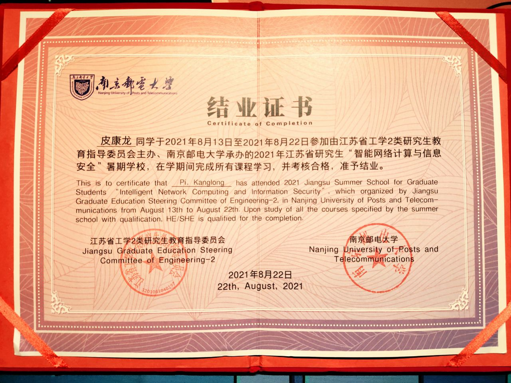
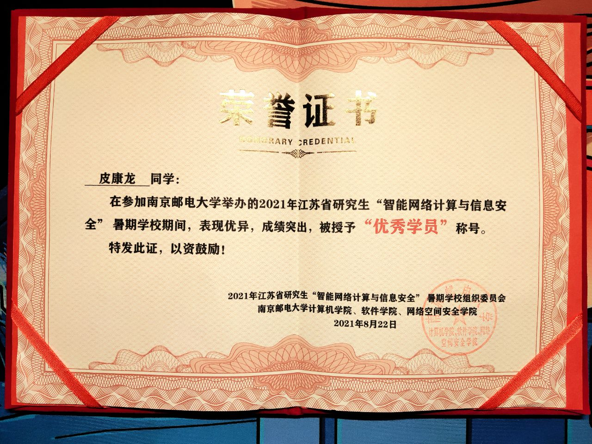

南京邮电大学暑期学校学习总结——回望暑期学校
UPDATE 20210827
此处嵌入了一个 YouTube 视频，需要稳定的网络环境。


原文章
白驹过隙，暑期学校已接近尾声。回望报名的日子，还像昨天一样。一直听说南邮的夏令营里全是大神，所以报名的时候很忐忑，甚至在等待结果的过程中因为惧怕难度过大，萌生过取消报名的想法。不过还是很荣幸能够被南京邮电大学计算机学院选中，来到这里后，才发现大家都很和蔼可亲，教授的学术报告也很通俗易懂。
第一天晚上举行了第一场会议。因为疫情，今年的暑期学校搬到了线上，取消了原计划的企业参观，真是很遗憾。从开场时徐佳老师的发言中了解到，南邮从 2017 年到今年已经连续举办 5 届了，2017 - 2019 更是江苏省唯一连续三年申请到暑期学校的高校。我们也了解到了，暑期学校由于同时面向本科生、硕士生、博士生，难易程度是相结合的，有些内容本科生理解起来可能会有点吃力。
接下来的自我介绍环节里，最令我印象深刻的是上海大学管理科学与工程的白冰峰博士，他的研究方向是电子商务数据挖掘和供应链分析。我非常同意他的要重视交叉领域的研究的观点。在我高中的时候，我就设想过未来从事地理信息技术这种跨学科的研究。
根据研究生们的自我介绍，我感觉大数据、人工智能、数据挖掘、信息安全等都是热门方向。本科生中，从事 Web 开发、人工智能和信息安全的同学非常多，是本科生的热门方向。不过有几位本科生的研究方向让我眼前一亮，有一位从事仿真 2D 实验室的研究，有一位从事三方博弈的网络舆情研究，还有一位是微电子学院的，认为微电子和计算机互联互通的东西很多，另我非常敬佩。
南邮的暑期学校卧虎藏龙，这些同学有的绩点非常高，有的科研能力特别强，有的社团经历特别丰富，拥有多个闪光点的人不在少数。不过，大家在做自我介绍时特别谦虚，「知不足者好学，耻下问者自满。」大家的品德令我非常钦佩。
和其他大部分从事大数据、人工智能、数据挖掘等方向的同学不同，我研究比较深的方向是区块链，因此也更为关注本期暑期学校有关区块链的内容。以区块链为主题的课程有三场，分别是 8 月 15 日张彦教授的「Blockchain for 6G and Internet of Things」学术报告、8 月 16 日黄海平教授的「区块链金融」短课程和 8 月 19 日王化群教授的「区块链中的密码学」短课程。
由于前期对区块链已经比较了解了，因此这三场课程的大部分内容对我来说都是已经了解的内容，但是我仍看见了一些让我眼前一亮的知识和观点。
在以前，我认为比特币的链上，每一个区块仅记录前一个区块的哈希值和对本区块运算得到的哈希值。然而在黄海平教授的课上，我第一次见到了「Merkle 根」的概念。事实上，比特币区块由区块头和区块体构成。区块头中主要存储着前一个区块的哈希值、通过构造交易记录组成的 Merkle 树进而计算得出的 Merkle 根值、本区块哈希。当交易记录被篡改时，就会导致 Merkle 根的值被修改。而本区块的哈希值仅是对区块头进行哈希运算，并不是我之前理解的对整个区块数据哈希运算。
黄海平教授还给我们辨析了「数字资产」、「数字货币」二者的区别，以及「电子货币」、「虚拟货币」、「数字货币」三者之间的区别。这些概念对于人们来说非常难辨别，尤其是比特币中有个「币」字，大量有关「XX 币」相关的诈骗活动频发，更是让人一头雾水。简单地说，比特币是数字资产，央行的数字人民币是数字货币，支付宝里的余额是电子货币，Q 币是虚拟货币。
王化群教授说区块链的技术都是传统的密码学，只是把他们组合在了一起。这个观点我是知道且认同的。但是他在课上讲的另一个内容却是我不知道的：比特币私钥通过椭圆曲线计算得到公钥，公钥通过哈希函数计算得到地址。在以前，我一直以为只有私钥计算得到公钥这一步，公钥就是地址。于是，我在问答环节就这个问题提问了王教授：为什么不直接使用公钥当地址？这是多此一举还是说公钥和地址有不同的作用？王教授对我的问题进行了非常详细的回答，我在这里归纳如下：有很多数字货币是直接拿公钥当地址的，只是比特币没有这样设计。量子计算可以攻破椭圆曲线，但无法攻破哈希函数。因此，当我只向对方提供地址时，未来是无法通过量子计算机获取我的私钥的。当发送比特币时，需要提供发送方的公钥进行数字签名，而不是地址。
同样让我想提问的还有张彦教授。他在课上介绍了区块链的三种类型——公有链、私有链、联盟链。这一下就勾起了一个困扰了我很久的问题：私有链只有一个节点，那么是否与区块链的去中心化、分布式特性相违背？私有链的管理员掌握着 100% 的算力，那么是否与区块链的不可篡改性相违背？张教授说这是学术界一直在争论的一个问题——私有链和传统数据库的区别到底在哪里？张教授说完全的私有链是很少的，完全的私有链没有意义，更多的以联盟链的形式存在。我当时没有举出具体的例子，实际上私有链是可以通过区块链浏览器的形式被外界访问的。比如百度百科的词条，每一次修改都会在百度的区块链上记录，用户可以通过浏览器访问区块信息，而实际读写链上信息的是百度的服务器。在我眼里，这样就会大大降低区块链的可信度，因为管理员可以随意篡改链上信息。而百度的这条链，到底是在数据库中加了一个字段还是真正有一条链都不得而知。
这个问题黄海平教授在课上也进行了讨论，他认为私有链并不具有去中心化、不可篡改性的特点，这两个特点更多的是针对于公有链而言的。
同样的问题我也在暑期学校的微信群里进行了讨论。我当时的发言比较过激，原话是「我觉得只有公有链才算区块链，私有链很多特性就丧失了。」龙章伯同学回应我说「如果是为了保证某个单位或者某个企业的运作，某些特性的缺失，会不会让私有链的特性发挥更明显呀？」这个问题我目前也没有答案，希望未来有一天能够解惑。
中国央行发行的数字人民币据宣传是拥有离线支付功能的。当微信群里在讨论区块链的双重支付问题时，我也顺着表达了我的疑惑：双方都离线的数字人民币支付会不会导致该问题？大家一致认为有可能会出现该问题。由于南京没有试点数字人民币，我搜了很多使用数字人民币的 Vlog 视频，才发现目前数字人民币并不能实现双方离线交易。如果一方离线的话，另一方必须是政府指定的在线的商铺才能成功交易。这样一来就说得通了：必须要有可信的一方上传账本。
暑期学校当然远不止区块链的课程，丰富多样的课堂形式，不同方向的学术知识都令我耳目一新。
最令我印象深刻的是 8 月 17 日由 YOCSEF 南京主办的「疫情大潮过后，我们的个人信息将何去何从？」讨论会。一方面，这个选题非常的好。在疫情时代，我们的个人信息在政府、小区、公共场所被大量地收集。在后疫情时代，这些数据很有可能被不安好心的人利用，因此我们必须认真严肃地看待个人隐私。另一方面，我非常欣赏 YOCSEF 南京平等的原则。在讨论会上，大家都是直呼其名，不加任何头衔。这种平等的学术氛围是我梦寐以求的。
这场讨论会我倾听了所有来宾的发言，对于他们的发言我都表示赞成。但是其中有一位说希望以身份证号作为 ID 登记所有人的信息，这是我不太赞同的。身份证号作为公民唯一识别 ID，在隐私保护中处于较高级别，要谨防泄露。因此，我提出的方案是利用健康码进行信息登记。政府作为更可信的一方，由政府根据个人信息数据生成唯一的新的个人标识符，将其并入其他数据后生成健康码。由商户、小区物业扫描健康码记录出入信息是否为一种更好的方案？
另一场令我印象非常深刻的是 8 月 16 日南京大学谢磊教授的「从有源感知到无源感知：人工智能时代的智能感知机制研究」学术报告。谢教授的报告非常接地气，演讲全程举了很多应用场景，令我一个没有研究过无源感知的人都听的津津有味。同时，我也敬佩于谢教授团队的科研实力。目前，国际上定位与感知方案精度，清华大学做到了 7cm，美国 MIT 做到了 2cm，而他的团队已经做到了 1mm！真的是太强了！精度达到 1mm 的项目是 Drop Monitor，即基于 RFID 的高精度输液滴速监测。巧合的是，这个项目就在泰康仙林鼓楼医院实际应用，而我前几天刚去过这个医院的输液大厅。每瓶药水快滴完的时候，护士就会来身边看一眼，当时我还在想护士是不是经手过的病人太多了，对每个病人的输液速度了如指掌。原来是谢教授团队开发的方案。
除此之外，一些短课程也令我收获颇丰。8 月 16 日夏彬教授的「科研方法与论文写作」短课程，带着我们详细了解了一篇论文的组成部分，对每一部分的正确写法和错误写法都进行了详细的阐述。夏教授的讲解很生动，其中穿插了不少他写论文时的小故事。8 月 18 日薛景教授的「Python 数据挖掘」短课程，带着我们回顾了 Python 的基本语法，向我们展示了数据挖掘的基本写法和应用，也令我获益良多。
本期暑期学校有二十多场报告或短课程，虽然我每一门课都有所思，有所想，记录成了笔记保存。但是如果全部写在这篇文章中，难免会令这篇文章有点冗长。总的来说，虽然其他课程大部分都是我没有深入研究过的方向，但是报告的老师都是将深入的理论讲的非常通俗易懂。参加完这次暑期学校，我对博弈论、物联网、车联网、人工智能、云计算、信息安全、智慧农业、数据挖掘、网络计算、智能计算……等等等等，都有了飞跃性的理解。除了学术界，还有工业界的高人前来作报告，比如腾讯的高级工程师程伟关于「零售企业数字化新增长之路」的企业报告。
虽然我在参加前很惧怕自己听不懂，而且第一天老师也给我们打过预防针，本科生没必要完全了解每一方面。但是经过一周的学习，我发现暑期学校没有想象中的那么可怕，老师们显然对自己研究的学术方向已经了如指掌，能够用通俗易懂的方法把知识讲清楚。因此，我也推荐我的学弟学妹们明年参加暑期学校。听说每年的内容都不同，明年我也会再来。
回望暑期学校，最令我珍惜的还是人。暑期学校作为一个很好的平台，在这里能够认识各个学校的大佬，找到志同道合的人。在暑期学校的微信群中，大家先是互帮互助，在课程开始前友好地讨论上课需要安装的环境，互相帮助解决问题。由于今年是线上举办，大家都见不了面，所以刚开始还有点不好意思。但是课程开始之后，大家熟络起来时，群里就充满了自由的学术氛围。
在这次暑期学校中，我认识了很多好友。有南京邮电大学通达学院的潘业成，他和我都是连云港人，本科阶段都研究过 Java 开发。有扬州大学的徐贵双，我们一起研究了 kolla 的安装。有内蒙古师范大学的郭文影，她的自我介绍是一段非常精彩的动画。还有十几位其他同学，都是非常优秀的大神，都是苔岑之契。
虽然今天还没有到分组汇报的日子，但是我已经准备好了 PPT，期待和其他同学一起交流自己的学术研究。和倾听老师的学术报告一样，我也很关注同学们的研究方向。计算机其实有很多不同的研究方向，因为我还是本科生，对于研究生的方向还没有特别明确的想法。因此，我这次打算仔细记录一下同学们的工作，说不定就给我的未来产生了一些灵感。
感谢本期暑期学校的班主任马玲玲老师，在暑期学校的全程处理我们的各种琐事，还在最后筹办结业晚会，给我们留下了美好的回忆。感谢为我们作报告的各位教授，感谢他们百忙之中抽出时间将前沿技术分享给我们。感谢所有帮助了本期暑期学校成功举办的人，因为你们我才能享受一场高质量的、充实的暑期学校。
如果硬要说本期暑期学校有什么遗憾的话，那就是因为疫情没有能够线下和大家见面。愿疫情早日结束，拨开云雾见青天，明年我们线下见！